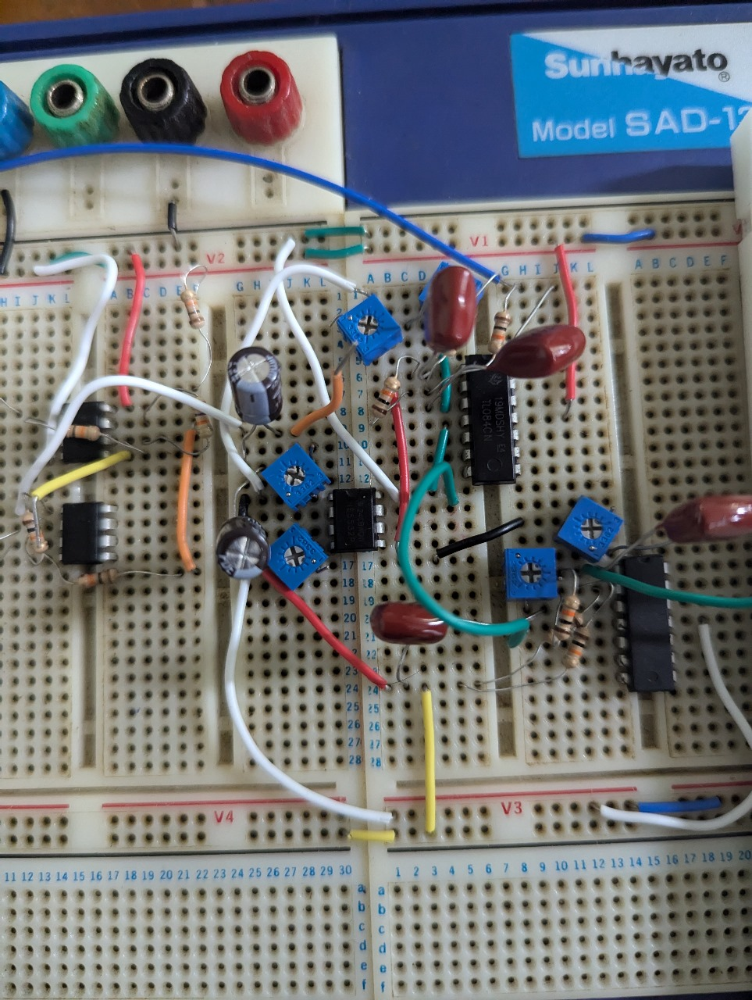
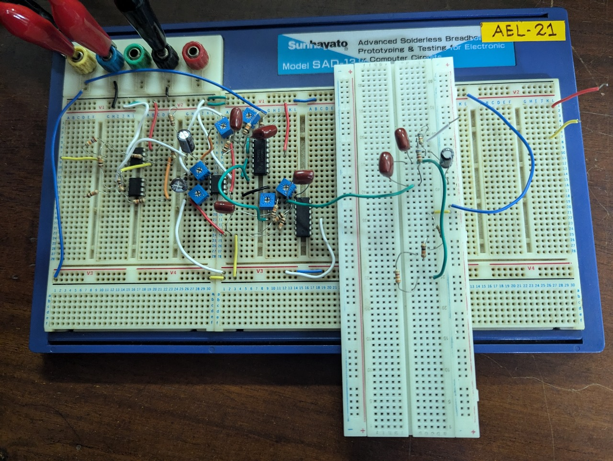
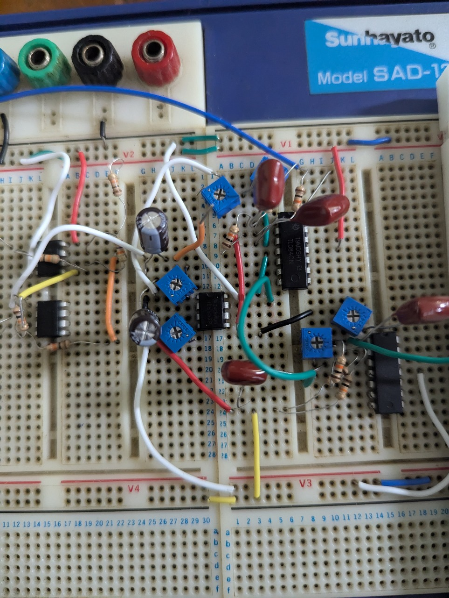
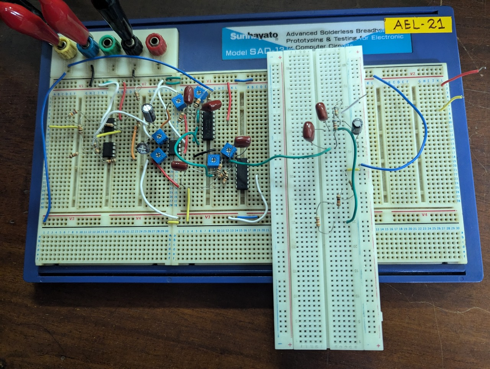

PCB and Schematic
The PCB and schematic for our EMG device were designed using Altium Designer, ensuring precise and efficient circuit integration. The design includes signal acquisition, filtering, and amplification stages critical for accurate muscle activity monitoring. The PCB, manufactured by JLCPCB, features a compact and noise-minimized layout, emphasizing portability and reliability. Our approach ensures cost-effectiveness while allowing room for future upgrades such as wireless functionality and AI integration, aligning with the project’s goals of accessibility and scalability.


Enclosure Design
The enclosure of our EMG device is designed to provide durability, portability, and user-friendliness. It houses and protects the internal components, including the PCB, sensors, and power supply, from environmental factors such as dust, moisture, and accidental impacts. The design includes ergonomic features, ensuring ease of handling and comfort during use. Additionally, strategically placed ventilation and connector openings ensure proper airflow and seamless connectivity with external devices. The enclosure enhances the device’s aesthetic appeal while maintaining functionality, aligning with the goal of making the EMG device accessible and practical for diverse applications in healthcare, prosthetics, and sports.


Product Development Stage
The product development stage marked a pivotal step in transforming the conceptual design of our EMG device into a functional prototype. This phase encompassed several key activities:
- Research and Analysis: Identified user needs, evaluated existing solutions, and defined the technical specifications for the device.
- Circuit Design: Designed the schematic and PCB layout using Altium Designer, ensuring efficient signal processing and seamless component integration.
- Component Selection: Chose cost-effective, high-quality components to meet performance and affordability objectives.
- Prototyping: Manufactured the PCB with JLCPCB and assembled the device to test functionality and identify areas for improvement.
- Enclosure Design: Developed an ergonomic and durable enclosure to protect components and enhance ease of use.
- Testing and Iteration: Conducted rigorous testing to validate performance, refine the design, and improve reliability.
This stage laid the groundwork for a practical and affordable EMG device tailored to meet needs in healthcare, sports, and prosthetics while allowing for future enhancements.
 


